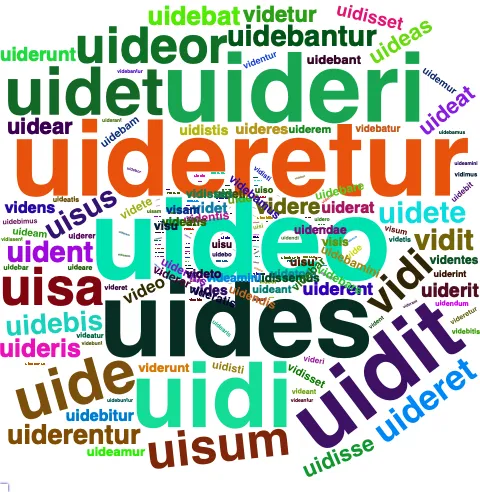
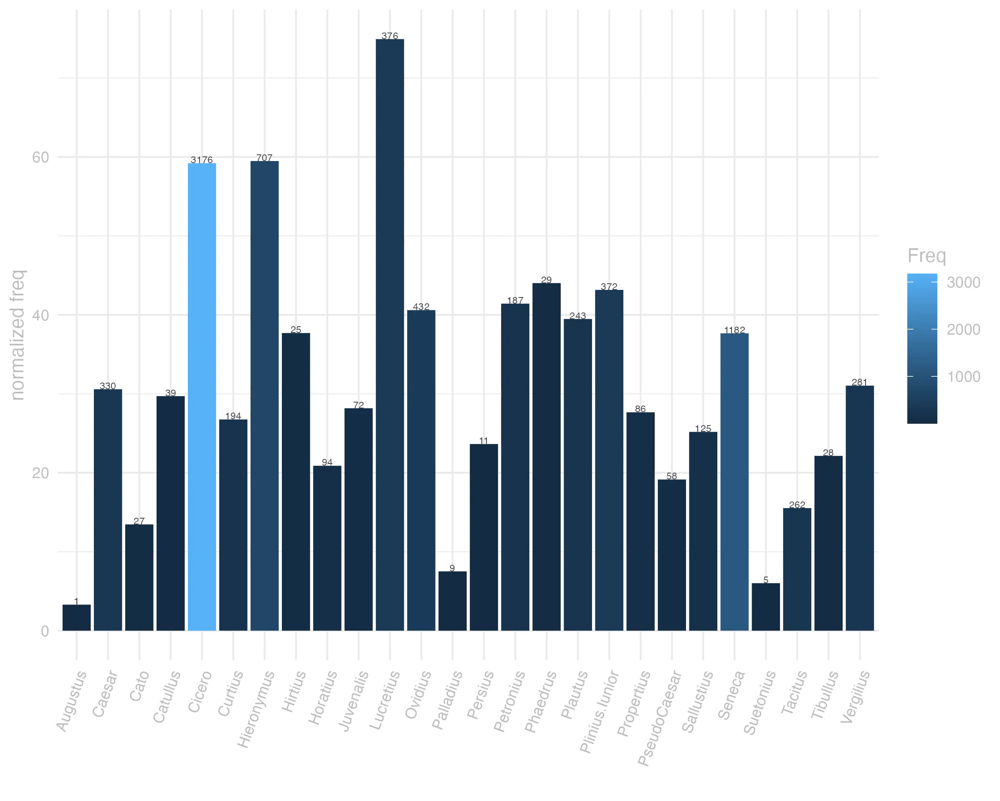
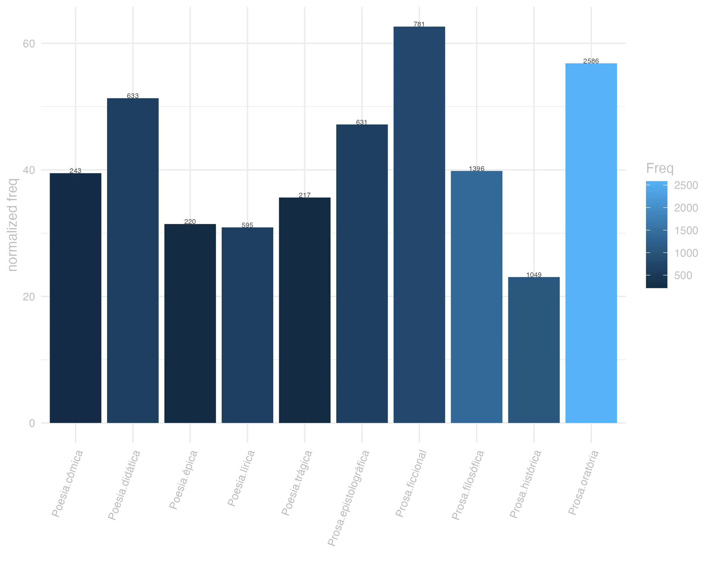
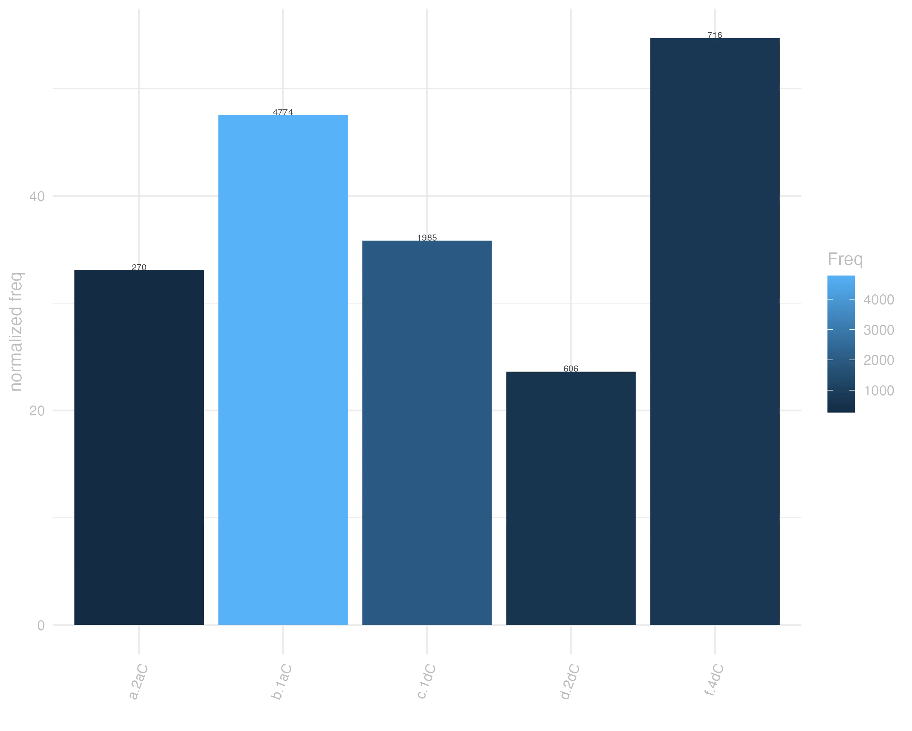

47 uideo
47.0.0.1 forma
Classe: verbo
Flexão: 2ª conjugação (tema em -e-)
V Video -es
F Video -es -idi -isum -ere
F Videor -eris -isus sum -eri
uideo presente | indicativo | 1ª pessoa singular | voz ativa
uidere presente | infinitivo | ativo
uidebit futuro | indicativo | 3ª pessoa singular | voz ativa
uidi pretérito perfeito | indicativo | 1ª pessoa singular | voz ativa
uisum particípio passado | nominativo neutro singular
uisurum particípio futuro | nominativo neutro singular

47.0.0.2 significado
Grupo semântico: Visão
F 2 achar bom, crer a proposito.
F 2 examinar, considerar, ponderar, reflectir.
V 3 parecer pass. Videor, eris saepissimè significat
F 1 parecer. pass. Cic.
V 2 ser visto pass. Videor, eris
F 1 ser visto. pass. Virg.
V 1 ver, entender, considerar, advertir, prover Activ.
F 1 ver. Cic.
lexemas: achar, descobrir, informar-se, inteirar
categoria: cognição
valências: [ACT,PAT]
synset_id: 00598954-v
lexemas: afigurar, envisionar, figurar, ver, visualizar
categoria: criação
conceito: imaginar; conceber; ver na imaginacao
valências: [ACT,PAT]
synset_id: 01635432-v
lexemas: antever, antecipar, prever
categoria: cognição
valências: [ACT,PAT]
synset_id: 00720808-v
lexemas: aprender, averiguar, constatar, descobrir, ver, verificar
categoria: comunicação
conceito: Descobrir, aprender, ou determinar com certeza, geralmente, depois de fazer um inquérito ou outro esforço
valências: [ACT,PAT] ou [ACT,PAT,EFF]
synset_id: 00920336-v
lexemas: compreender, entender
categoria: cognição
conceito: fazer sentido; atribuir um significado à
valências: [ACT,EFF,PAT] ou [ACT,PAT] ou [ACT,PAT,EFF] ou [ACT,ADDR,PAT]
synset_id: 00623151-v
lexemas: considerar, julgar, manter
categoria: cognição
conceito: Ter em mente ou transmitir, como convicção ou opinião
valências: [ACT,PAT,EFF]
synset_id: 00693780-v
lexemas: considerar, reputar
categoria: cognição
conceito: observar ou considerar
valências: [ACT,PAT] ou [ACT,EFF,PAT] ou [ACT,PAT,EFF]
synset_id: 00689950-v
lexemas: encontrar, ver
categoria: percepção
valências: [ACT,PAT]
synset_id: 02128873-v
lexemas: enxergar, olhar, ver
categoria: percepção
valências: [ACT,PAT]
synset_id: 02129289-v
lexemas: parecer
categoria: percepção
conceito: parecer para sua própria mente ou opinião
valências: [ACT,PAT,EFF]
synset_id: 02198234-v
lexemas: parecer
categoria: percepção
conceito: Parecer ser verdade, provável ou aparente
valências: [ACT,PAT,EFF] ou [ACT,DIR1,PAT]
synset_id: 02134672-v
lexemas: parecer
categoria: percepção
conceito: Dar uma certa impressão ou ter um certo aspecto exterior
valências: [ACT,PAT] ou [ACT,PAT,EFF] ou [ACT,ADDR]
synset_id: 02133435-v
lexemas: ter cuidado, tomar cuidado
categoria: percepção
conceito: ser vigilante, estar atento ou cuidando
valências: [ACT,PAT] ou [ACT,BEN] ou [ACT]
synset_id: 02151966-v
F X uide me Ter Confia-te em mim
F X uide quid agas Ter Vê o que fazes, repara em que te mettes
F uide sis Plaut. por Vide, si vis.
F X uidebis sub pedibus mugire solum Virg Sentirás soar o chaõ debaixo dos pés
V X uiden Vedes por ventura? pro Videsne?
F uiden Ter. por Videsne?
F X uidere diem Ovid Viver
47.0.0.3 uso
Ranking de frequência: 30 ª posição neste corpus
ita est mi Lucili cum uideantur dissidere coniuncta sunt Sen.Ep.5.7
Assim é, meu caro Lucílio: embora pareçam discrepar, estão unidos. JDD
corpus aberat liberatoris libertatis memoria aderat in qua Bruti imago cerni uidebatur Cic.Phil.10.8.3
O corpo do libertador estava ausente, estava presente a lembrança da liberdade; e nessa lembrança parecia ser vista a imagem de Bruto. JDD
his igitur in tabulis nullam lituram in nomine A. Licini uidetis Cic.Arch.9
Ora, nestas escrituras não vedes nenhuma rasura no nome de Aulo Licínio. JDD
quo quid miserius quid acerbius quid luctuosius uidimus Cic.Mil.90
Vimos algo mais triste, mais doloroso, mais lamentável do que isso? JDD
lumen hoc uide Pl.Cur.117
nonne Iesum Dominum nostrum vidi Vulg.1Cor.9.1
nunc oculum bublum uidi maiorem Petr.44.12
oculos habentes non videtis Vulg.Marc.8.18
quam uero indignus uideor Pl.As.697
sit hoc inhumanitatis stultitiam incredibilem uidete Cic.Phil.2.8.1


